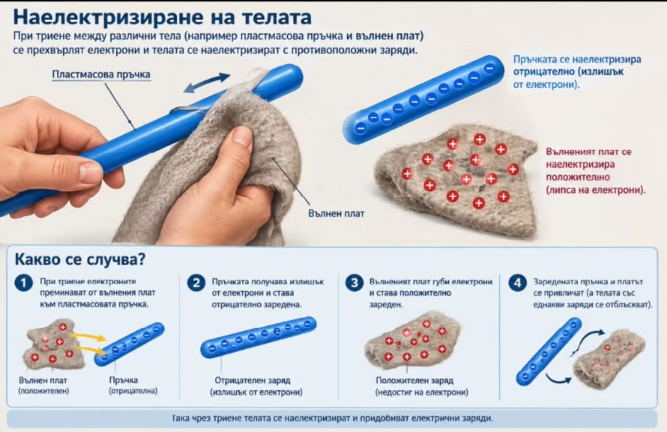

Наелектризиране на телата: Процесът се осъществява чрез триене или допир.
Телата могат да се наелектризират (зареждат) по два начина:
Две едноименно заредени тела се отблъскват, а разноименно заредените се привличат.
Тест № 6
Зад. 1. Единицата за измерване големината на електричния заряд е:
а) N;
б) С;
в) km/h;
г) A.
Справочник
Зад. 2. От какво зависи дали две наелектризирани тела ще се привлекат?
а) от големината на заряда;
б) от разстоянието между тях;
в) дали са едноименно заредени;
г) дали са разноименно заредени.
Зад. 3. Защо твърдим, че атомите са неутрални, щом в тях има заредени частици?
Зад. 4. Ще се промени ли силата, с която си взаимодействат две наелектризирани тела, ако ги отдалечим едно от друго?
а) не
б) да, ще намалее
в) да, ще се увеличи
Зад. 5. Кое от изброените вещества не е проводник?
а) мед;
б) сребро;
в) стъкло;
г) алуминий.
Зад. 6. За да протече ток е необходимо:
а) наличие на проводник;
б) наличие на източник;
в) наличие на проводник и източник.
Зад. 7. Какво представлява електромагнитът?
а) постоянен магнит;
б) намотка с желязна сърцевина;
в) П-образен магнит;
г) намотка с ток.